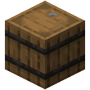
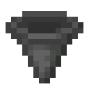
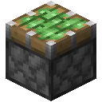
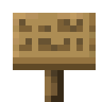
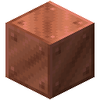
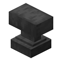
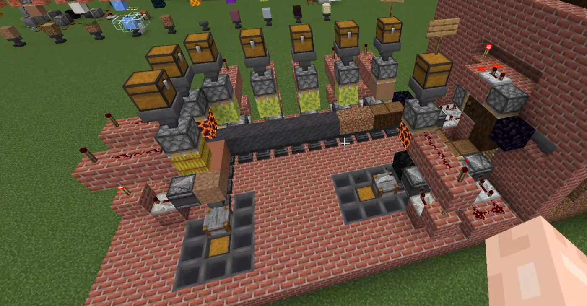

2.6k+
Downloads
200+
Recipes
100%
Vanilla Datapack
Assembly Guide







Press Machine
Build vertically, block-by-block, to create a functional press:
- Place an Anvil at the base. (Anvil requirement enabled by default; configurable)
- Place the recipe block directly on top of the base.
- Leave 1 block of open space above the target block for piston extension.
- Place a tier block above the air gap, topped with a downward-facing Sticky Piston.
- Attach a Hopper feeding into the top of the piston, connected to a Chest for item and fuel automation. (Fuel requirement enabled by default; configurable)
- Optional: Place an Item Frame on the piston to filter items and prevent processing past the specified block.
- Optional: Place a Sign on the piston to give it a custom name, which will display in refueling and destruction alerts.
Recipes
Images

AvatarKage TommyFoxy2
TommyFoxy2
Configuration
Require an anvil at the bottom for presses to operate.
Require fuel for presses to operate (unique per type eg: coal, dyes, lava, water, etc.).
Allow gilded blackstone for gold tier, budding amethyst and crying obsidian for diamond tier, and more.
Breaks blocks placed on top of it.
If disabled, stonecutter will only break blocks relevant to the datapack.
Deals 6 constant damage. If heat source under, entities burn until no longer on the stonecutter.
Dispenser places any block inside it when powered by redstone.
Replace TYPE with the type of press you want to enable or disable.
View holographic information about presses.
FAQ
Does this require mods?
No, this is a 100% vanilla datapack. It works natively on vanilla Minecraft clients and servers.
How do I install this on a server?
Drop the downloaded zip folder into your server's world/datapacks directory and run /reload.
Server Hosting Partner
Need a server to run Hydraulic Machinery with friends? Get lag-free Minecraft server hosting with easy datapack setup from BisectHosting.
Download Hydraulic Machinery
Bring automation and industrial machines to survival Minecraft.
Download Now